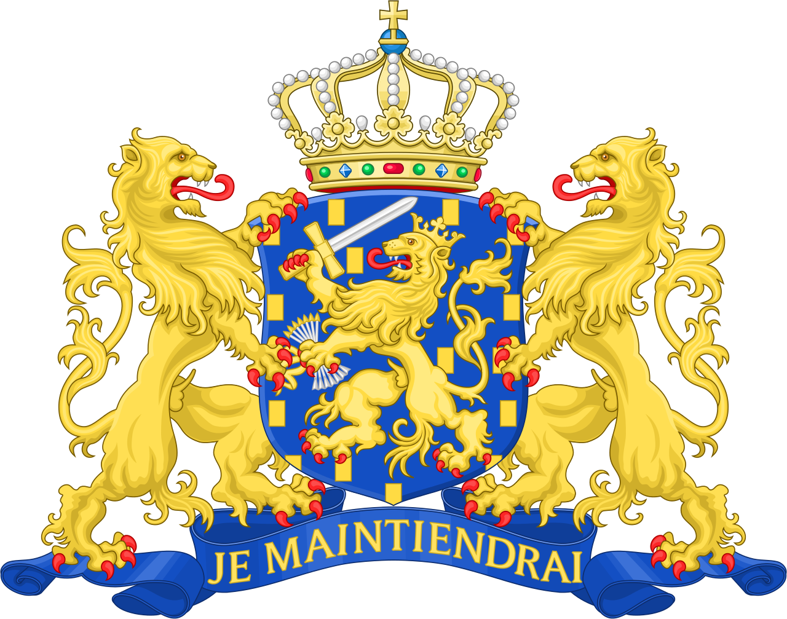
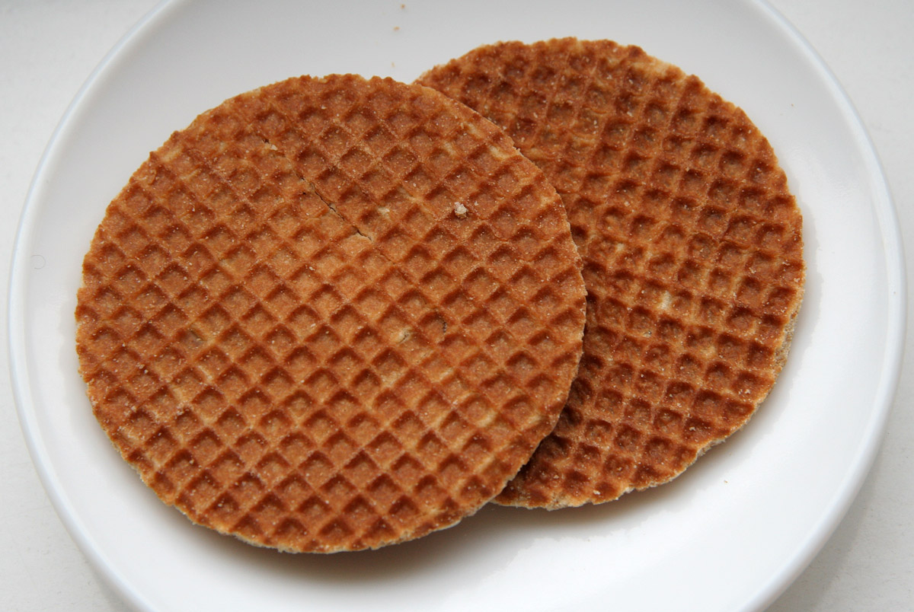

The Netherlands
Stroopwafels


A special Dutch waffle originating from Gouda, South Holland that can be eaten in the mornings or evenings, often with coffee or tea.
Ingredients
- All-Purpose Flour: 4 cups
- Ground Cinnamon: 1/2 teaspoon
- White Sugar: 1/2 cup
- Butter, unsalted: 1 cup
- Eggs, large: 2
- Active Dry Yeast, package: 1 (0.25 oz)
- Water, warm: 1/2 cup
- Packed Brown Sugar: 1 1/2 cups
- Butter, unsalted: 1 cup
- Ground Cinnamon: 1 teaspoon
- Dark Corn Syrup: 6 tablespoons
- (Optional) Hazelnuts, finely grounded: 1/2 cup
Waffles
Filling
Steps
- Preheat a pizzelle iron
- Make the waffles. Dissolve the yeast in the warm water. Add one cup of the butter into the flour. Mix in the sugar, cinnamon, eggs and yeast mixture. Mix well and set aside to rise for 30 to 60 minutes. Roll dough into 12 small balls, squeeze each ball into the preheated pizzelle iron and bake for about 30 seconds.
- Make the filling. In a saucepan boil the brown sugar, the remaining one cup of the butter, cinnamon, and dark corn syrup until it reaches the soft ball stage (234-240°F or 112-115°C).
- Stir in ground hazelnuts at this point, if using.
- Now assemble! Cut each waffle into two thin waffles and spread with filling.
- Repeat this process until all the filling is used.
Note: You can warm up your stroopwafels later by placing them on top of a warm cup of coffee or tea!
Source: Stroopwafels
History Source: Stroopwafels